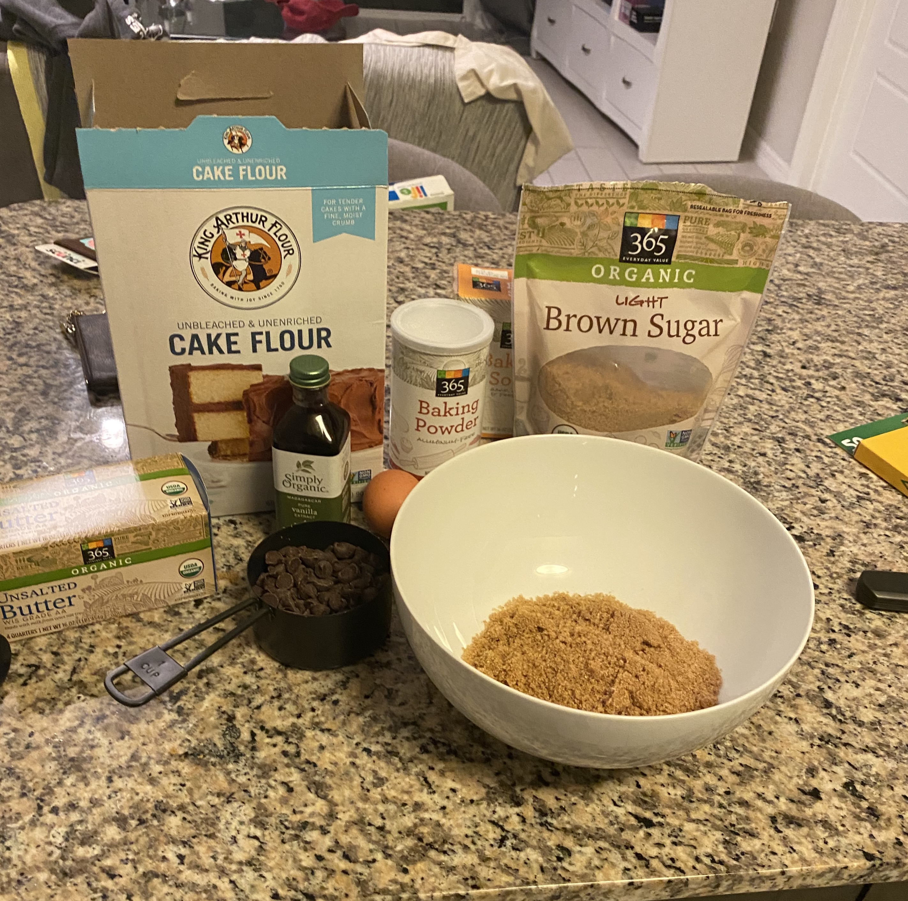
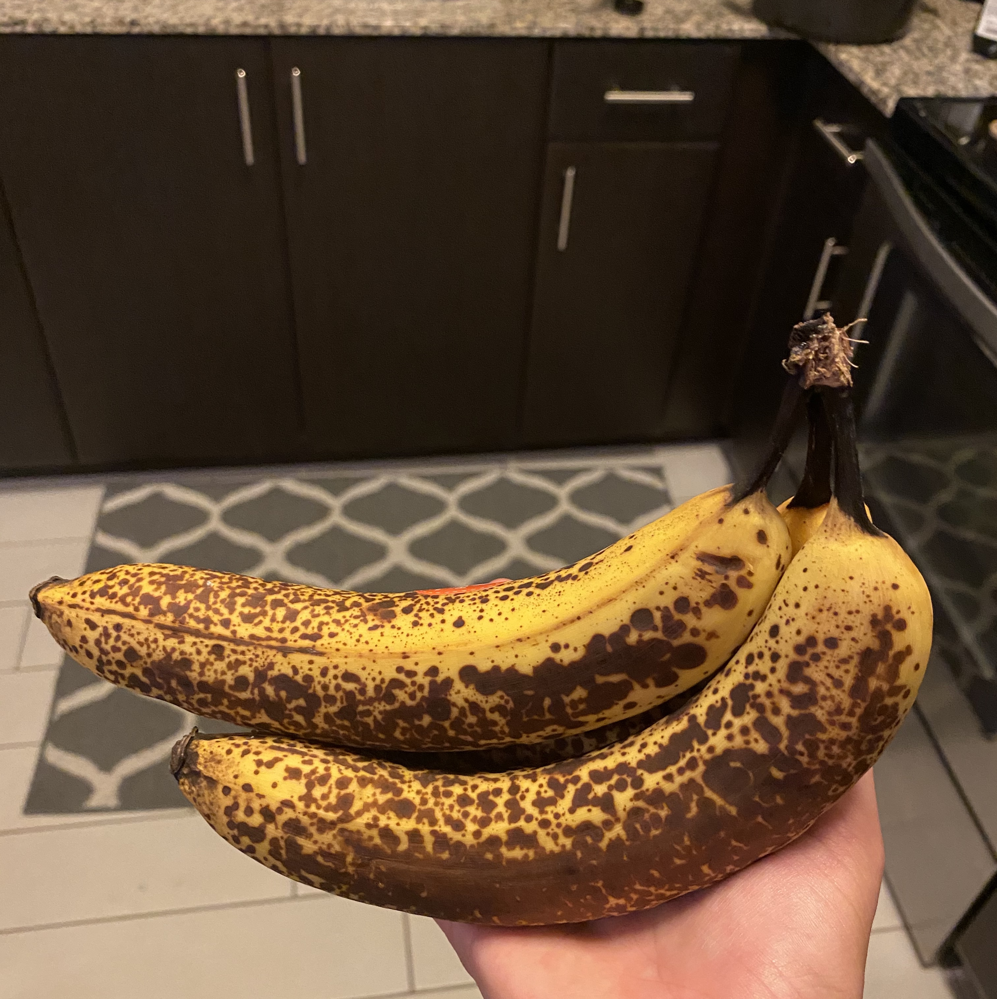
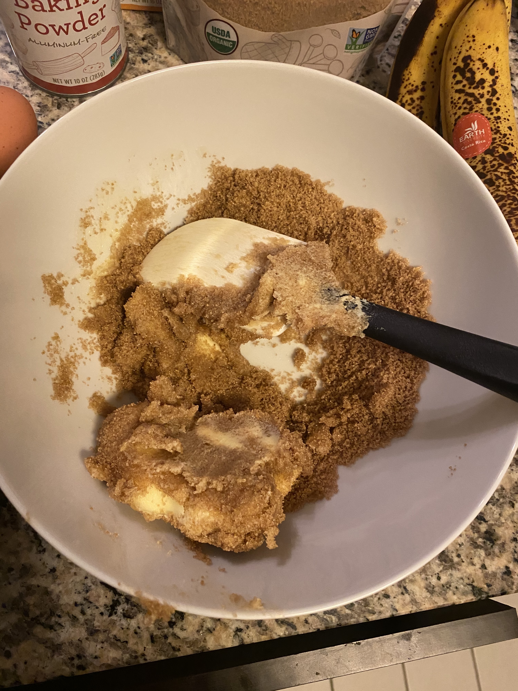
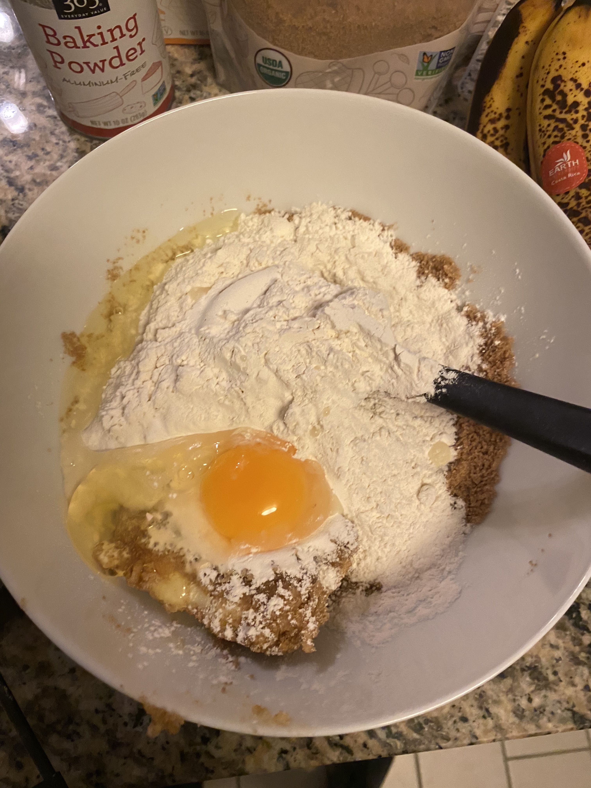
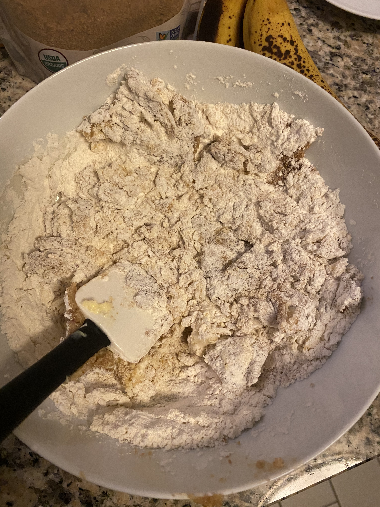
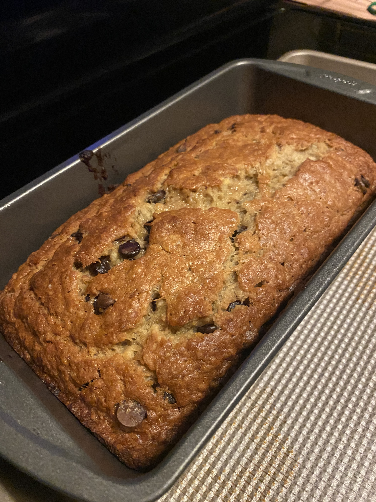

Ingredients +
- 1 stick of softened unsalted butter
- 1 cup of brown sugar
- 1 large egg
- 3 very ripe bananas
- 1 teaspoon of vanilla
- 2 teaspoons of baking powder
- 2 cups of all-purpose flour
- 1/2 teaspoon of baking soda
- 1/4 teaspoon of salt
- 1 cup of dark chocolate chips


Instructions:
Step 1
Preheat oven to 350 degrees F.
Step 2
Line a 9x5 loaf pan with parchment paper. Spray with nonstick spray and set aside.
Step 3
In a large bowl, cream butter and sugar together for about 2 minutes until smooth.

Step 4
Whisk in the egg then add the mashed bananas and vanilla. Mix and add flour.

Step 5
Add the baking soda, baking powder, and salt. Mix until just combined.

Step 6
Mix in chocolate chips lightly.

Step 7
Pour the mixture into the loaf pan. Bake for 55-65 minutes until a knife inserted in the center of the loaf comes out clean. Let cool for at least 30 minutes before serving.
